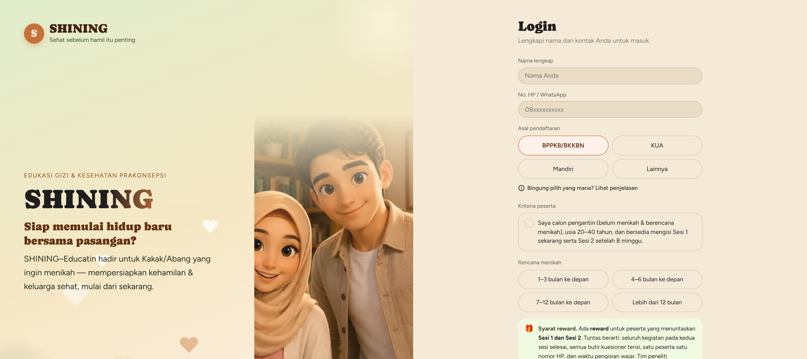

1Abstrak
Masa prakonsepsi merupakan jendela penting untuk memperbaiki status gizi calon ayah dan calon ibu, tetapi sekitar separuh orang dewasa Indonesia mengalami berat badan lebih atau obesitas, sementara misinformasi gizi beredar luas di media sosial. Penelitian ini bertujuan menganalisis pola penggunaan media sosial calon pengantin (catin) serta hubungannya dengan pengetahuan gizi prakonsepsi, sikap berbasis Health Belief Model (HBM), dan indeks massa tubuh, sekaligus mengevaluasi proses pengembangan platform edukasi daring SHINING. Desain potong lintang dan evaluasi proses model ADDIE diterapkan di Kota Binjai pada Juli–Oktober 2026 terhadap 198 catin yang memenuhi syarat; 74 di antaranya dianalisis. Sebanyak 38,9% catin menuntaskan keenam instrumen, WhatsApp menjadi platform utama (59,5%), dan 73,0% mengakses media sosial hampir setiap jam. Pengetahuan berkorelasi positif dengan sikap HBM (rs = 0,414; p < 0,001), sedangkan 51,4% catin berat badan lebih atau obesitas. Perbaikan berulang terbukti menghilangkan kehilangan data pada kuesioner makanan. SHINING layak dikembangkan dan berpotensi diintegrasikan ke layanan bimbingan pranikah melalui BKKBN dan KUA sebagai sistem edukasi gizi prakonsepsi yang berkelanjutan.
2Pendahuluan
- Urgensi. Masa prakonsepsi merupakan periode kritis untuk memperbaiki gizi calon ayah, calon ibu, dan anak yang akan dilahirkan, namun sering diabaikan (Stephenson et al. 2018). Sekitar separuh orang dewasa Indonesia berat badan berlebih atau obesitas (Pengpid dan Peltzer 2017), dan hampir separuh catin berpengetahuan gizi kurang (Melani dan Kuswari 2019; Zahra et al. 2024).
- Media sosial dan HBM. Pengguna internet Indonesia mencapai 221,5 juta, didominasi milenial dan gen-Z (APJII 2024). Misinformasi gizi menyebar luas, hampir separuhnya dari akun influencer (Wang et al. 2019; Denniss et al. 2024). Dalam HBM, media sosial berperan sebagai isyarat untuk bertindak (Janz dan Becker 1984).
- Kesenjangan. Edukasi online catin memberi hasil beragam (Atmaka et al. 2022) dan rentan drop-out (Eysenbach 2005). Laporan pengembangan platform prakonsepsi online di negara berpenghasilan rendah-menengah masih terbatas, padahal HP spesifikasi rendah, berbagi HP, dan jaringan tidak stabil umum terjadi.
- Tujuan. (1) Menganalisis penggunaan media sosial catin dan hubungannya dengan pengetahuan gizi prakonsepsi, sikap HBM, dan IMT; (2) mengevaluasi pengembangan dan penerapan platform web SHINING.
3Metode
Desain: potong lintang dan evaluasi proses (tahap pengembangan model ADDIE)
Tempat dan waktu: Kota Binjai, Sumatera Utara; Juli–Oktober 2026
Subjek: 198 catin memenuhi syarat (jalur BKKBN dan KUA); 74 dianalisis (data lengkap dan valid; 30 laki-laki, 44 perempuan)
Instrumen: identitas, pengetahuan 48 butir (KR-20 = 0,904), sikap HBM 24 butir (α = 0,955), FFQ, IPAQ-SF, media sosial
Analisis: Spearman, Mann-Whitney, Kruskal-Wallis; p < 0,05
Etik: KEPK Poltekkes Kemenkes Medan No. 01.26.1986/KEPK/POLTEKKES KEMENKES MEDAN 2025
4Alur Penelitian (Model ADDIE)
Analisis kebutuhan
Kajian literatur, survei awal, analisis kebutuhan catin
Desain media
Rancangan konten dan alur berbasis HBM
Pengembangan
Platform web SHINING, materi edukasi, instrumen daring
Implementasi
Rekrutmen catin, uji lapangan, perbaikan berulang
FOKUS POSTEREvaluasi
Evaluasi proses dan pola penggunaan media sosial
FOKUS POSTER(BKKBN dan KUA)
persetujuan
instrumen sesi 1
(30 laki-laki, 44 perempuan)
5Platform SHINING

Laman awal dan login SHINING
- Materi gizi prakonsepsi berbasis bukti dan konstruk HBM
- Ramah HP; masuk dengan nama dan nomor WhatsApp
- Progres dan draf tersimpan otomatis per nomor HP
- Instrumen terintegrasi: pengetahuan, sikap HBM, FFQ, IPAQ-SF
6Proses Pengembangan Platform SHINING
7Hasil 1 · Instrumen Sesi 1 (n = 198)
| Tahap | n (%) | Median | |
|---|---|---|---|
| Persetujuan | 171 (86,4) | – | |
| Identitas | 161 (81,3) | 1,9 mnt | |
| Tes pengetahuan | 107 (54,0) | 16,7 mnt | |
| Sikap HBM | 96 (48,5) | 3,0 mnt | |
| FFQ | 92 (46,5) | 5,5 mnt | |
| Media sosial | 82 (41,4) | 3,2 mnt | |
| IPAQ-SF | 82 (41,4) | 1,8 mnt | |
| Keenam instrumen | 77 (38,9) | – |
Penurunan terbesar terjadi sebelum tes pengetahuan, instrumen terpanjang. Kiriman berulang mencapai 13,8% rekaman.
8Hubungan yang Bermakna
| Variabel | Terhadap | rs | p |
|---|---|---|---|
| Skor pengetahuan | Sikap HBM | +0,414 | <0,001 |
| Memeriksa kebenaran informasi | Sikap HBM | +0,287 | 0,014 |
| Platform utama (WhatsApp terendah)a | Sikap HBM | – | 0,006 |
| Durasi harian media sosial | IMT | −0,331 | 0,004 |
| Sumber akun nakes/resmib | IMT | – | 0,022 |
rs: korelasi Spearman. aKruskal-Wallis. bMann-Whitney; median IMT 22,5 vs 26,6 kg/m². Frekuensi akses, pengetahuan, dan sikap tidak berhubungan dengan IMT.
9Hasil 2 · Media Sosial (n = 74)
| WhatsApp utama | 59,5% | |
| TikTok/Instagram | 33,8% | |
| Akses ±tiap jam | 73,0% | |
| Durasi ≥3 jam/hari | 51,4% | |
| Akun nakes/resmi | 75,7% | |
| Influencer | 39,2% | |
| Tertarik produk promosi | 71,6% |
Sumber informasi dapat dipilih lebih dari satu.
10Menurut Peran Catin
*p < 0,05 (khi-kuadrat)
11Simpulan
- Penggunaan media sosial catin intensif dan didominasi WhatsApp.
- Pengetahuan umumnya baik dan berkorelasi dengan sikap HBM, tetapi 51,4% catin berat badan lebih atau obesitas.
- Platform SHINING layak dikembangkan; perbaikan berulang terbukti menutup celah kehilangan data, sedangkan instrumen yang panjang masih menjadi titik putus utama.
12Saran
- Edukasi: latih verifikasi informasi, arahkan catin ke akun tenaga kesehatan yang kredibel, ingatkan bahaya produk tanpa izin edar, dan manfaatkan WhatsApp sebagai saluran pengingat.
- Platform: instrumen ringkas dan berurutan logis, simpan draf otomatis, serta pemantauan data secara langsung selama pengumpulan data.
13 · Akses SHINING
- Pindai QR atau buka tautan di atas.
- Isi nama dan nomor WhatsApp.
- Baca ringkasan persetujuan, lalu mulai.
14 · Ucapan Terima Kasih
- Para calon pengantin peserta penelitian
- Pemerintah Kota Binjai, BKKBN, dan KUA
- Tim peneliti dan enumerator lapangan